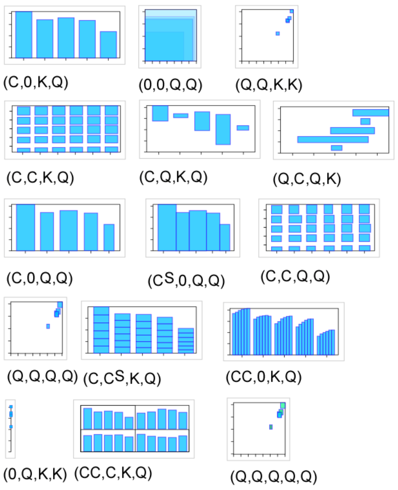

Visual grammar
Bertin's visual grammar
The previous grammar is an expansion of Bertin's simpler grammar. His book Semiology of graphics is a must-read.
According to Bertin, the two planar dimensions are the most important visual variables, then come size, value, texture, color, orientation, shape.
The structure of Information Visualization Design Space pdf
This paper describes how to map data types (e.g. ordinal, categorical, numerical) to graphical variables
| Data | Controlled | Automatic | Interaction | |||||||||
|---|---|---|---|---|---|---|---|---|---|---|---|---|
| Variable | D | F | D' | CP | M | R | X | Y | Z | T | V | W |
Symbol Meaning
D: Data Type e.g. Nominal, Ordinal, Quantitative, Spatial, Geographical, Graphs
F: Function for recoding data e.g. filter, sorting
D’: Recoded Data Type (see D)
CP: Control Processing tx (text)
M: Mark types e.g. Point, Line, Surface, Area, Volume
R: Retinal properties e.g. Color, Size, Connection, Enclosure
XYZT: Position in space time
V: View transformation e.g. hyperbolic mapping
W: Widget e.g. slider, radio buttons
Grammar
Marks: (Point, Line, Area, Surface, Volume)
Controlled Processing Graphical Features
Automatically Processed Graphical Properties
Retinal encodings: (Color, Size, Shape, Gray-level, Orientation, Texture, Connection, Enclosure)
Position: (X, Y, Z, T)

A simplified grammar
Here is a somewhat simplified grammar that is a practical subset to design datavis.
Data types (taken from pdf): categorical, quantitative, constant
Graphical variables: x, y, size, angle, color
Assembly strategies: adjacency, nesting, linking